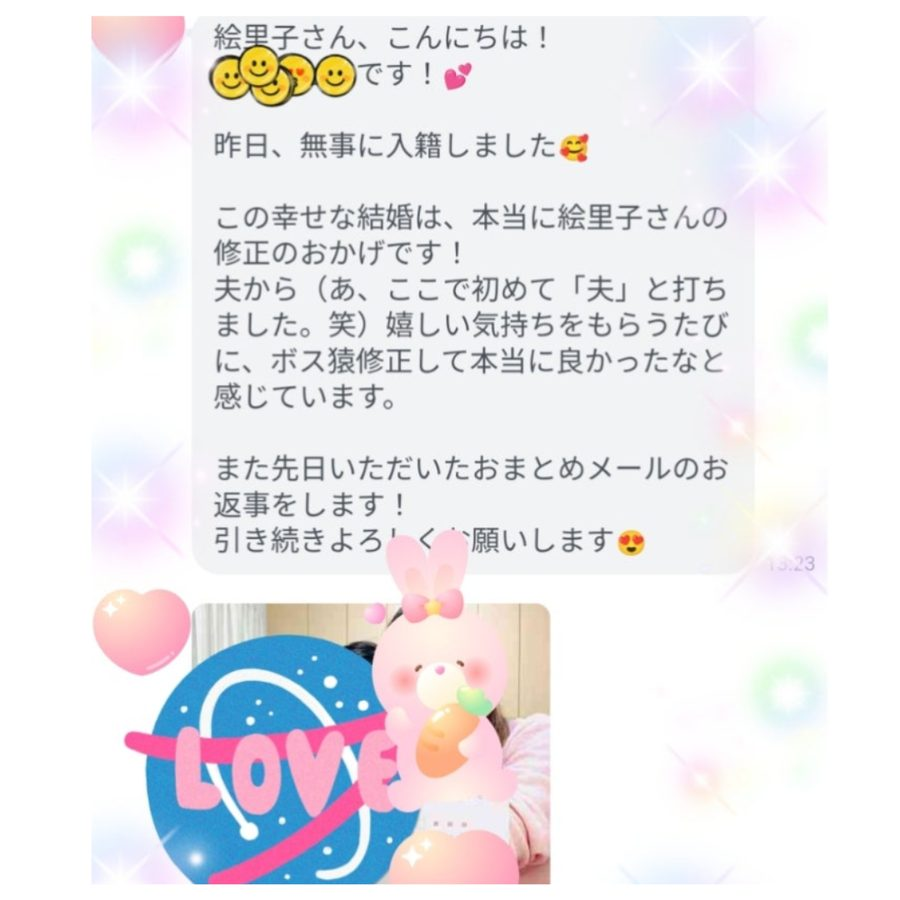
長年の不倫恋愛から、人生史上最も理想な人を引き寄せ、スピード婚！
絵里子さん、こんにちは！💕 昨日、無事に入籍しました！ この幸せな結婚は、本当に絵里子さんの修正のおかげです！ 夫から嬉しい気持ちをもらうたびに、 本当に諦めずに修正してきて良かったな！と感じています。
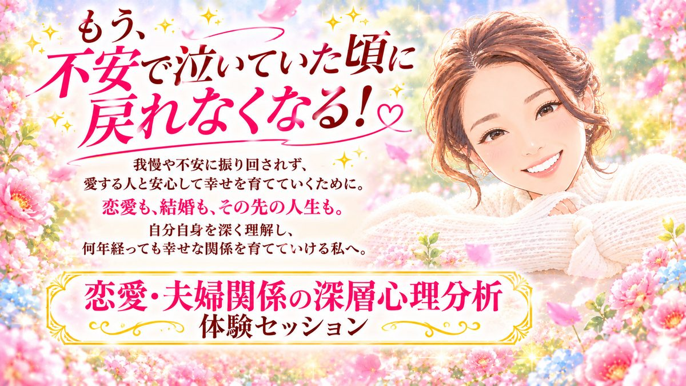
もう、
不安で泣いていた日々に
戻れなくなる！
もう、
我慢や不安に振り回されず、
愛する人と安心して
幸せを育てていくために。
結婚・出産後も、
その先の人生も
何年経っても幸せな関係を
育てていける私になるために。
愛着・潜在意識、
心の防衛反応から、
恋愛や夫婦関係で繰り返される
【問題の背景】を
読み解いていきませんか？
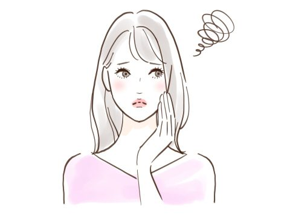
ひとつでも
思い当たることがあっても、
自分を責める必要はありません。
同じ問題や反応を
繰り返してしまうのは、
あなたの努力が
足りないからでも、
幸せになる力が
ないからでもありません。
そこには、
自分でも気づいていない
心の仕組みが
関係しているのです。
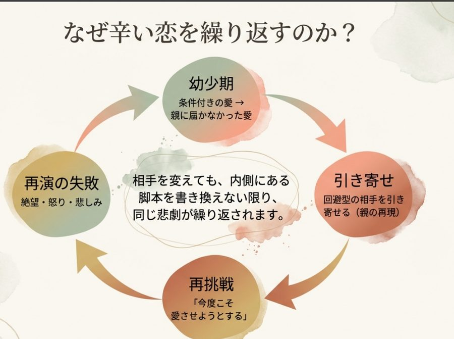
＼今すぐここをクリックして体験セッションに申し込む！／恋愛も結婚も、
本当は幸せになるために
選んだはずです。
それなのに、
彼からの連絡
ひとつで不安になったり、
夫の言葉に
深く傷ついたり、
「私ばかり頑張っている」
と感じたり……。
もう、こんな思いは
したくないと思いながら、
なぜか似たような苦しさを
繰り返してしまう。
それは、
あなたの努力が
足りないからでも、
相手を見る目が
ないからでもありません。
私たちは、
自分でも気づいていない
深い心のパターン
（仕組み）を通して、
恋愛や夫婦関係を
見ていることがあります。
恋愛や
パートナーシップを
変えるのは、
行動だけではありません。
「もっと自分を大切にしよう」
「相手に依存しないようにしよう」
「いつも笑顔で過ごそう」
そんなことは、
もう十分頭では
分かっている。
でも、それでも変われない！
あなたも、
こう思っているのでは
ないでしょうか？
それは、
あなたが本当は
分かっていないからではなく、
深い心では、別の反応を
しているからなのです。
私が使っている
【深層愛着メソッド】
では、
この【深い心の仕組み】
を分析し、
問題解決を促していく
メソッドです。
ここで見て伝えるのは、
あなたの男運でも
男性心理の話でも
ありません。
あなたの
【深い心の仕組み】、
つまり、
などを分析し、
あなたの
「なぜ、こうなるの？」
を紐解いていきます。
＼恋愛だけじゃない。
人生まで変わり始めたお客様の声♡／
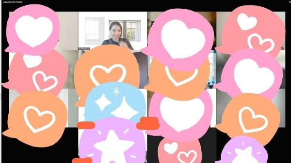

絵里子さん、こんにちは！💕 昨日、無事に入籍しました！ この幸せな結婚は、本当に絵里子さんの修正のおかげです！ 夫から嬉しい気持ちをもらうたびに、 本当に諦めずに修正してきて良かったな！と感じています。
深層意識を修正をし始めて、こんなに早く色々なことが変わるなんて！と驚いています。絶縁状態だった両親と和解し、喧嘩ばっかりですぐに家出する彼が、私が理想としていた以上の指輪を買ってくれて、マイホームも契約してくれて、入籍まで叶うとは、、、私、今すごく幸せです＾＾
絵里子さん、どうしましょう。23年ぶりに元カレと会った夜、彼に店を出た瞬間「久しぶりに君の笑顔を見て、本当に好きだって思った。残りの人生を一緒に過ごしたい。君の大切な人のことも、2人で大事にしていこう。」と言ってもらえました。その言葉が、まるで未来の扉みたいに胸に響きました。気づいたら、仕事も生活も恋愛も、全部が静かに良い方向へ動き出していて、今私は人生でいちばん幸せです。
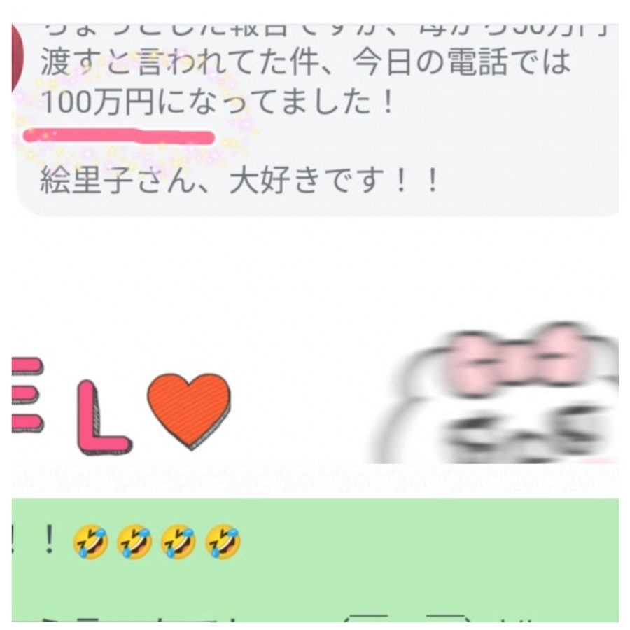
どうやら今年は冬のボーナスが【１の後にゼロが6個付くぐらいの金額】が出るらしいのです!!（＊つまり100万ということ）しかも、諸々差し引いたあとの金額が…その上、夏も例年よりたくさんいただいてるんですよ!!!! うちの会社…マッチ箱みたいに小さな少人数の会社なんですよ？！！どうしましょう!?!?!?
絵里子さん、実は今、あの国民的教育番組である「●●●●と●●●●」に関わらせてもらっています！（笑）
修正文がそのままカタチになりました！！（驚）そして他にも、国民的コメディアンの方の始まりのドラマ、ネットフリックスの「●●●」にも携わらせていただくことになりました！
その他お客様からの素敵なご感想は、こちらをご覧ください＾＾
長田絵里子アメーバブログ
⇧【お客様からのご感想】一覧はこちらをクリック！
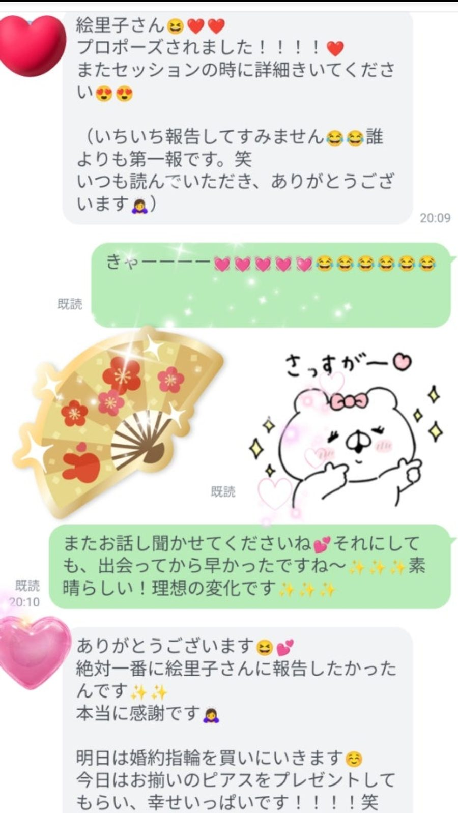
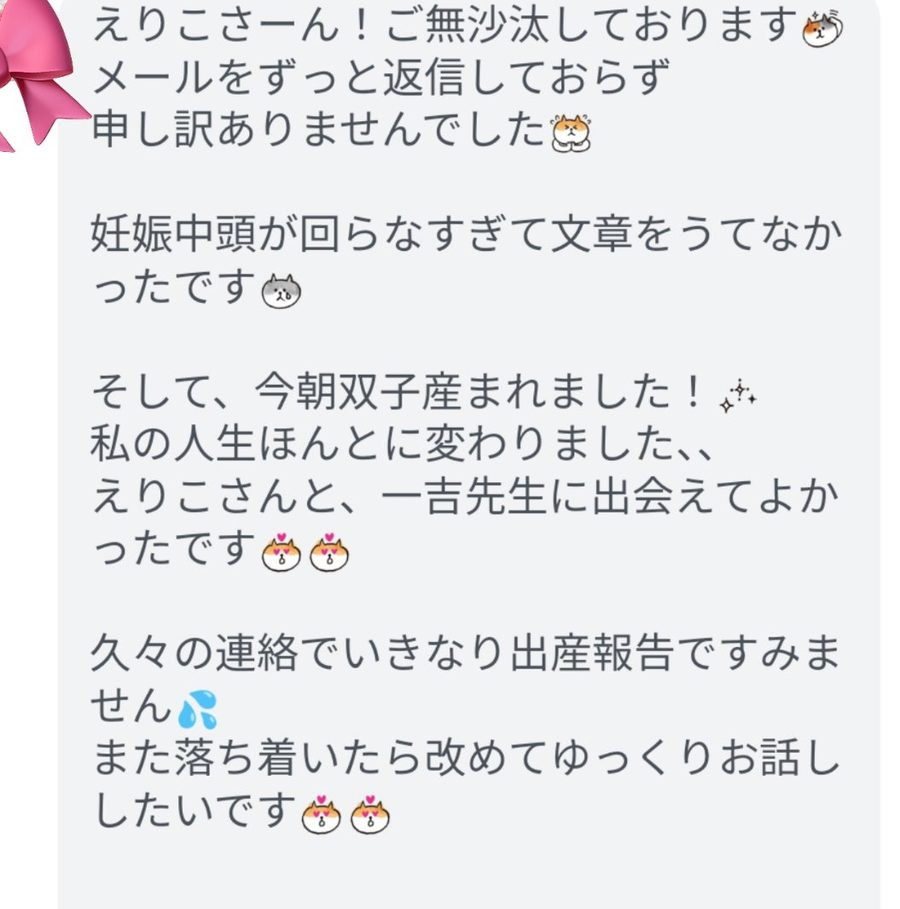
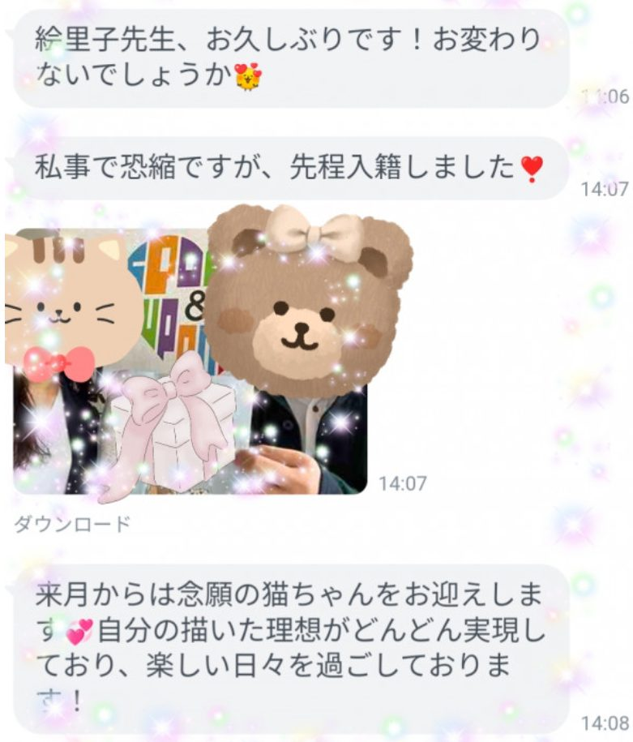
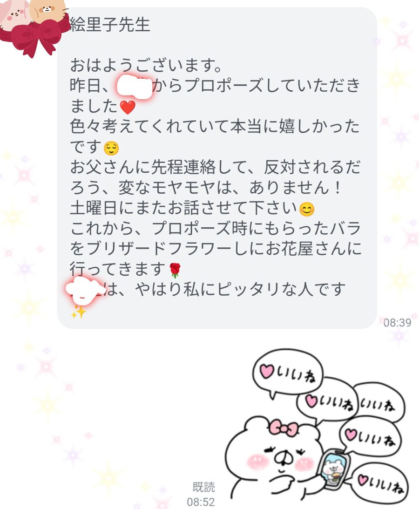
実は、
上でご紹介したお客様の
ほとんどが、
✅すでにセッションを
受けたことがある。
✅心理学を
長年学んでいる。
✅ご自身も
カウンセリング活動をしている。
などのご経験が
すでにおありです。
それでも、
深層愛着メソッドに
出会うまでは、
・不倫恋愛から抜け出せない。
・モラハラ彼氏に
振り回されてばかり。
・婚活しても、成果が出ない。
・お仕事運や金運も、イマイチ。
だったとのこと。
では、なぜ
深層愛着メソッドでは
変化が出たのでしょうか？
それは、
深層愛着メソッドが
ひとりひとりの背景まで
深く、的確に見ていくことで、
あなたの苦しみを生み出している
【根本の思考パターン】
をあぶり出していけるからです。
一般的な分析だけでは、
その人の背景まで
届かないこともあります。
同じ「恋愛依存」でも、
―ある人は見捨てられ不安、
ある人は自己価値、
ある人は親への怒り、
ある人は我慢のクセ―
と、原因の背景は
人それぞれです。
だから大切なのは、
一般論やマニュアルではなく、
あなたの問題の奥にある
“本当のテーマ”
を見極めること。
深層愛着メソッドでは、
それを深く、的確に
見極めていきます。
そして、
見つけて終わり
ではありません。
誘導瞑想を通して、
心の奥にいる自分と出会い、
↓
その人の人生を書き換える
【オリジナル修正文】
によって、
その思考パターンそのものを
書き換えていきます。
これは、
◆愛着の傷 × 深層意識 ×
チャイルド修復の理論
をもとに組み立てられた
深層愛着メソッドだからこそ
できることです。
だからもし、あなたも
同じように学んだり、
セッションを受けたり
してきたのに、
変われなかったとしたら、
それは、
① 本当の問題に
たどり着くこと
② それをきちんと
書き換えること
この2つのどちらかが、
足りなかったのかも
しれません。
あなたが
変われない運命なのでは
ありません。
ただ、
本当の問題に
たどり着く方法と、
それを直す方法を、
知らなかっただけなのです。
だからこそ、
「分かっているのに変われない」
から、
「腑に落ちて、
安心しながら
自然と変わっていく」
へ。
これが、
【深層愛着メソッド】が
変化を起こせる理由です。
〜ここで少し、私自身の話をさせてください〜
「お前とは二度とない！」
と言われた私も、
恋愛に苦しんでいました。
実は私自身も、
かつては恋愛に
苦しんでいた一人です。
「お前とは二度とない！」
そう言われるほどの
大失恋を経験し、
それでも元彼（現・夫）を忘れられず、
復縁を望んでいました。
その前からも、
✅彼氏だと思っていた人が、
実は既婚者だった！😨
✅「この人なら安全だ」
と思っていた幼馴染が、
モラハラDV男だった！😱
などなど、
私のダメ恋エピソードは
山ほどあります＾＾；
そんなダメ恋ばかりを
繰り返してきた私は、
元彼（現夫）に大失恋した際、
「彼との関係が変われば、
私は幸せになれる！」
と信じ込み、当時流行っていた
「引き寄せの法則」
などを鵜呑みにし、
せっせと取り組んでいました。（笑）
けれど、
自分自身の内面を
深く見つめていくなかで、
気づいたことがあります。
本当に向き合う
必要があったのは、
元彼（現夫）への気持ちだけでは
なかったのです。
―親の不倫と離婚、
元々彼からの誹謗中傷、
貧困、摂食障害など―
それまでの人生で抱えてきた、
もっと深いところにある
私自身の心の問題でした。
「どうして私は、
こんな現実ばかり
繰り返すんだろう？」
「もうこんな苦しい
ばかりの人生はイヤだな……」
その思いから、
自分自身の
心の構造を学び、分析し、
一つずつ見直してきました。
その後、
私の人生には
次のような変化がありました。
しかし今思えば、
私が本当に
手に入れたかったのは、
「復縁」や「結婚」という
「結果」だけでは
ありませんでした。
愛する人と
安心して関われること。
自分をすり減らさなくても
愛されること。
自分の気持ちを
大切にしながら、
関係を育てていけること。
そして、
自分の人生を
自分らしく生きること。
そんな日々の中で、
「自分に生まれてきて
よかった！」
そんな思いを、感じることでした。
私は、
恋愛やパートナーシップの
問題は、
「恋愛だけ」の問題ではなく、
その人の「生きる力」
そのものに関わるものだと
考えています。
なぜなら、
恋愛や夫婦関係には、
その人がどう人とつながり、
どう愛を受け取り、
どう自分を守って
生きてきたのかが、
そのまま表れるからです。
だから、
深層愛着メソッドで目指すのは、
彼に愛されることや、
結婚することだけでは
ありません。
安心して生きる力。
自分を尊重する力。
「私はこれでいい」と思える力。
そして、
結婚したその先も、
自分らしく
幸せを育てていけること。
恋愛や
パートナーシップを通して、
人生を幸せに生きるための
【心の土台】
を取り戻す。
それが、
【深層愛着メソッド】
です。
＼あなたもこうなって
いきませんか？(^^)💞／
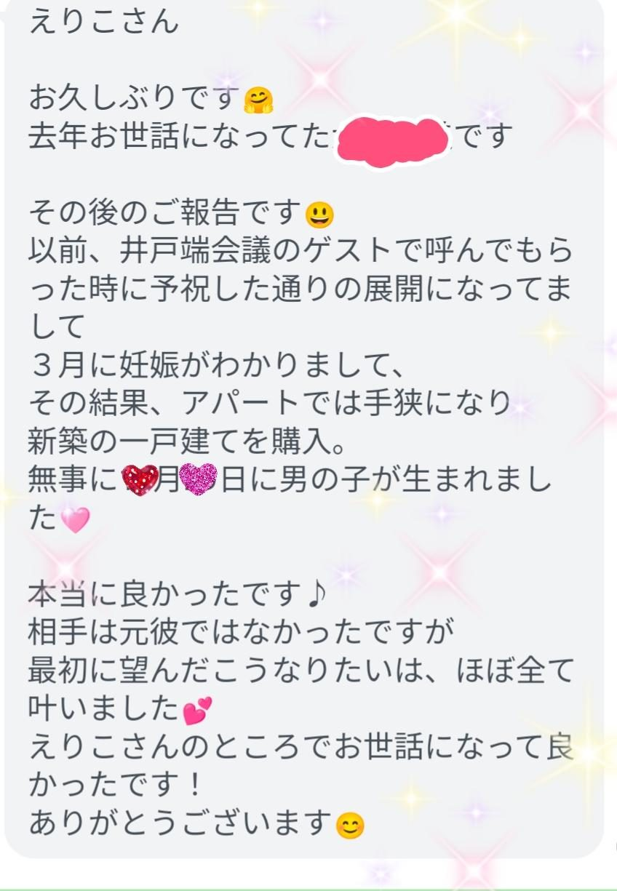
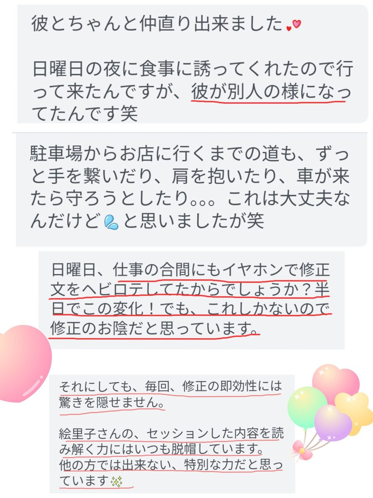
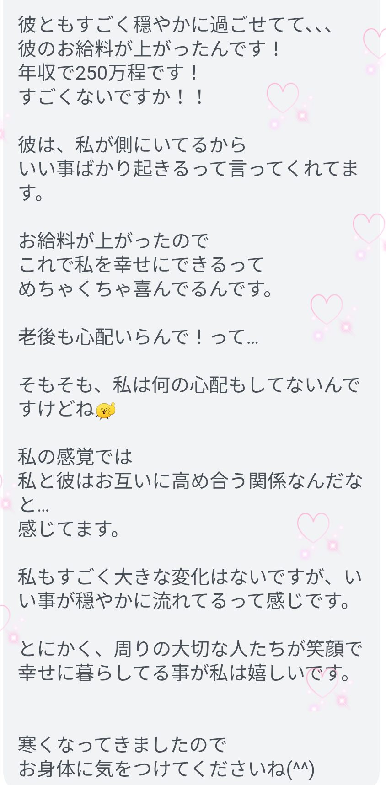
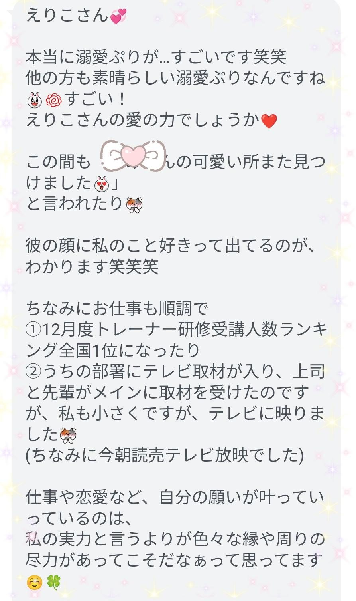
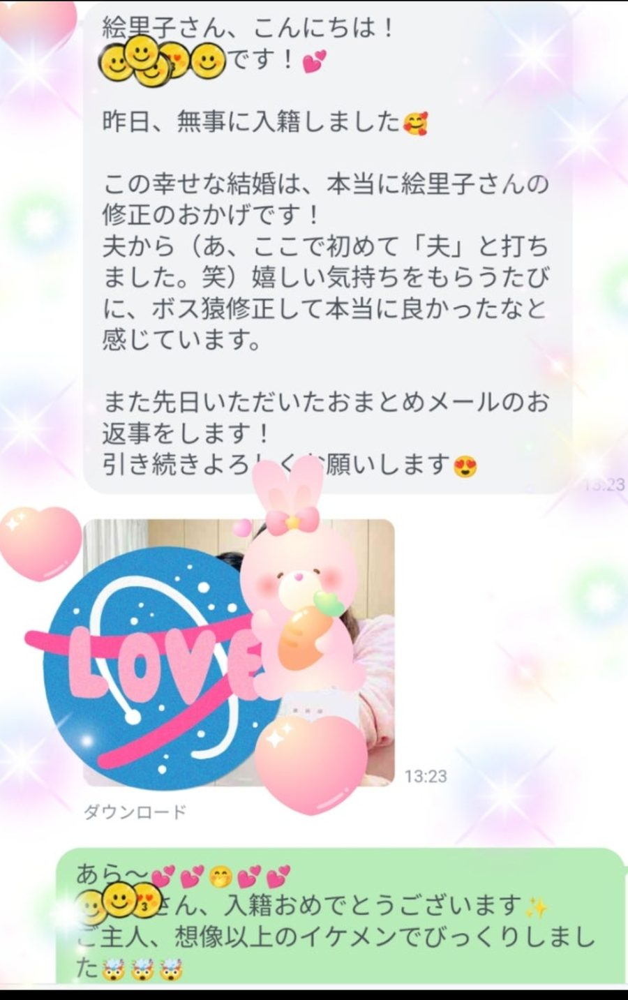
これまでたくさん
自分と向き合ってきても、
正確に
【自分の深層意識がどこに
向かっているのか？】
までは、
なかなか気づけないものです。
そこで体験セッションでは、
✅あなたが過去の経験から何を感じ、
✅何を思い込み、
✅それが今の恋愛にどう影響しているのか？
それを紐解きます。
そして、
「なぜ私は、
いつも同じ恋愛をしてしまうの？」
その恋愛パターンの根っこを、
サクッとお伝えしていきます♪
問題やお悩みを生み出している
「恋愛パターン」が分かっても、
「じゃあ、どう変えていけばいいの？」
が分からなければ、
本当の問題解決にはつながりません。
そこで体験セッションでは、
あなたの恋愛パターンに合わせて、
今日から実践できるワークや
アファメーションなど、
具体的な取り組みも
その場でお伝えします♪
恋愛パターンを変えていくために、
当メソッドでは
「愛着修復 × 深層意識」
の両面からアプローチします。
頭で「分かった」で
終わらせるのではなく、
心の奥にある思い込みや
反応を少しずつ変えていくことで、
恋愛での感じ方や行動も変わっていきます。
さらに、
「ここが変わったら、
あなたの恋愛はどう変わるのか？」
セッション後に
目指せる未来についても、
一緒にお伝えしていきますね＾＾♪
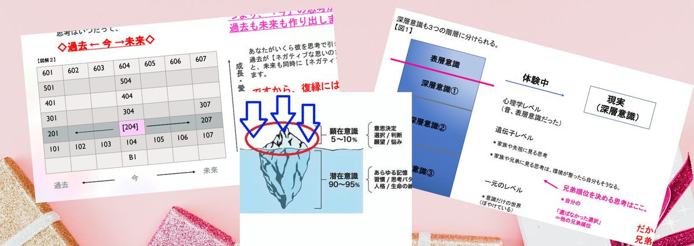
今すぐ体験セッションに申し込む！ごめんなさい。信頼関係を大切にしたいので、このような方はお断りさせていただいております。
私は、お客様が
自分の心を理解し、
自分にとって幸せな関係を
考えられることを
大切にしています。
お話を伺う際は、
あなたの経験や感じ方を尊重し、
ひとつの理論に
無理に当てはめたり、
短時間で原因を
決めつけたりしませんので、
ご安心くださいね＾＾
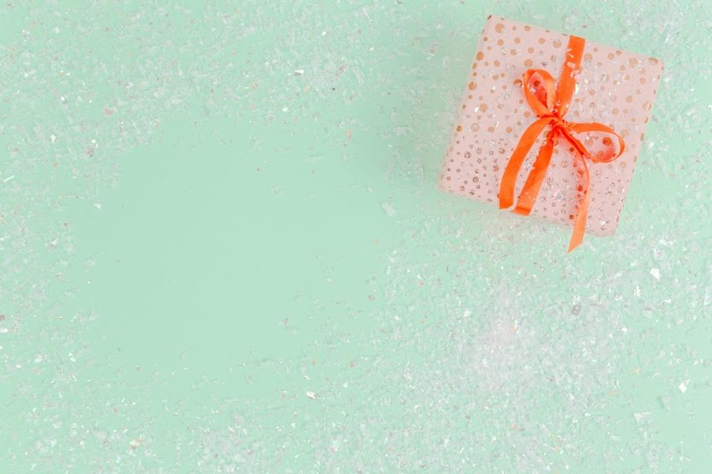
体験セッション（1時間）
Zoomで体験セッション！
本コースに進んでいただくには、こちらを受講済みの方のみとさせていただいております。
＊お申し込み後、アンケートを送らせていただきます。
（お申し込み後、24時間以内にメールでお送りします）
＊セッション日時はお申し込み後に調整していきましょう！
☆セッション受付可能日時は、
【水曜・日祝】以外の曜日の17時までに終わる時間帯
となっております。予めご了承くださいませ。
4,000円（税込）
お申し込みはこちらから！結婚したその先も、
愛する人と幸せを
育てていくために。
まずは、
今抱えている悩みを
一緒に整理するところから
始めてみませんか？＾＾
愛されるために生きる人生から、
自分らしく幸せに生きる人生へ。
その第一歩を、
ここから始めてみませんか？＾＾
長田絵里子
1988年10月生まれ。夫と娘の三人家族。
卒業後はアパレル会社に勤務。
会社員の傍ら、フラクタル心理学に出会い、カウンセリングをスタート（2018年〜）。
現在は、【愛着の傷 × 深層意識 × チャイルド修復のハイブリッド修正法】である深層愛着メソッドで、カウンセリングを提供中。